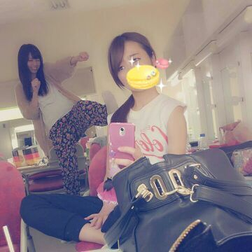

やあ(・∨・)/
携帯を変えてから文字の大きさが
よく分からない
ろっちーです ☆
前回のブログ文字小さく
なっとったぁ？？
今、文字サイズ大きしてんけど
ちょうどいい？
ほんでもって、
プリンシパルのお話に
なりますが、、、、
まひろね、最初いつみ役が
したくてしたくてしたくて
東京公演で ６回だっけな？
何回も挑戦して挑戦して...
いつみになれず、
結果 落とされまくったんだよね...
心痛かった...
楽屋で待機してるとき
いつみのセリフ動きを
モニターで
見ると、正直めっちゃ
悔しかった...。
いつみになれんまま
東京千秋楽を終え
大阪公演が始まった。
でも 諦めるつもりなかった...。
どうゆういつみを
オーディション時に
演じたらたくさんの方に
選んでもらえることができるだろう？と考えました。
まひろが 最後に立候補したのは
大阪最終日のお昼公演☆
その日 いつみ立候補者,
らりん、まりか、まひろ
らりんとまりかが立ちながら
すごい怒ったいつみを演じました。
３人同じいつみを
演じても 多分また落ちてしまう、
らりんには 1度負けてる...
声の大きさでは勝てない。
と正直思った。
まひろは れいかとななみんの
いつみに
『わぁ〜、すぎょいよ
ギョギョ(;゜∇゜)
酒感出てるなぁ〜うひょ〜』
と思ってました 。
だから、よしっ!
酒に酔ってすげぇ悲しい
いつみを演じるのだw
と思い、ホテルで練習してた
悲しいいつみを しゃがみこみ
思いきってやってみた...。
よしっ、、、
あとは あとは
結果を待つのみ 。
・・・・・・
選ばれたーーーー ！！！！！
おお？ わしゃ選ばれたよ(@_@)
とってもとっても、、
『嬉しゅう キモチwww(☆∀☆)』
どんちょうが下がり切ったら
はや着替えダッシュ〜。。
ろてぃいつです(ノ´∀｀*)
どうですか？
まひろこう見えて...
荒れた時期がないので
こんな付けまつ毛を付けるのは
初でした（´ 3｀)♪
何度も何度も諦めかけたその時
花は咲くんだね...
ぴょん ！
楽屋にて、
ななせまるパーンチ !

パンチとキックを同時にくらって
たこちゅうみたいな顔に
なりました(・ε・')
なので可愛いマカロンで
隠します。
以上っ rotty★でした(*^^*)/